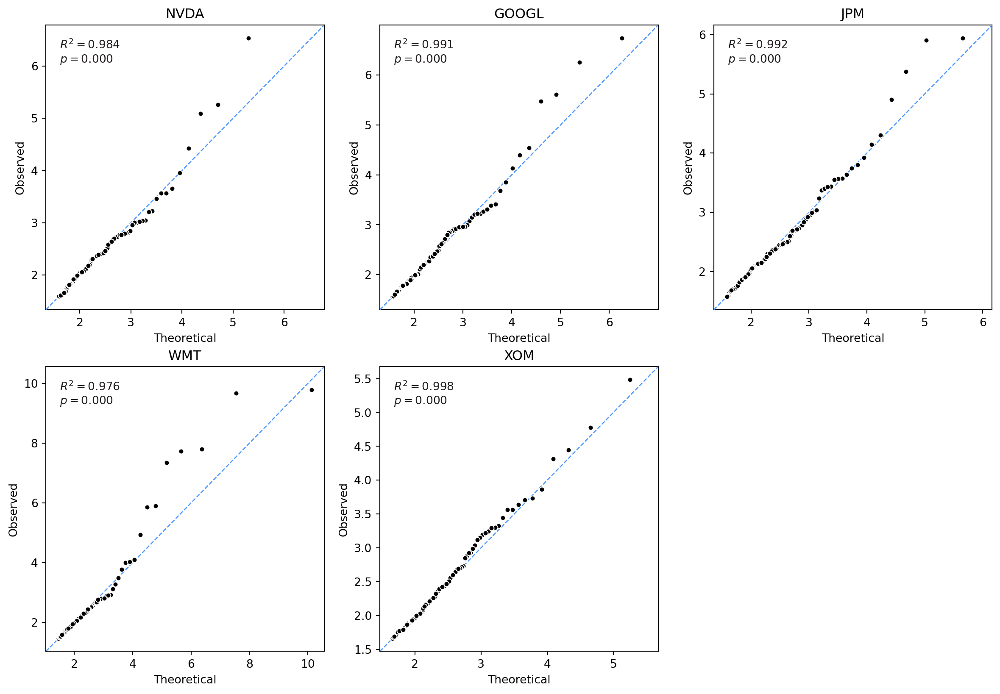
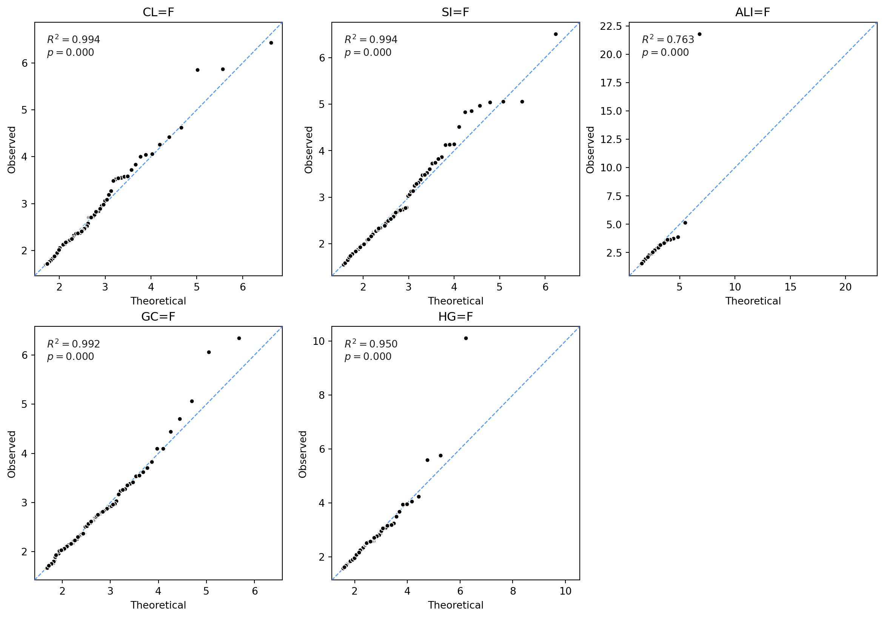
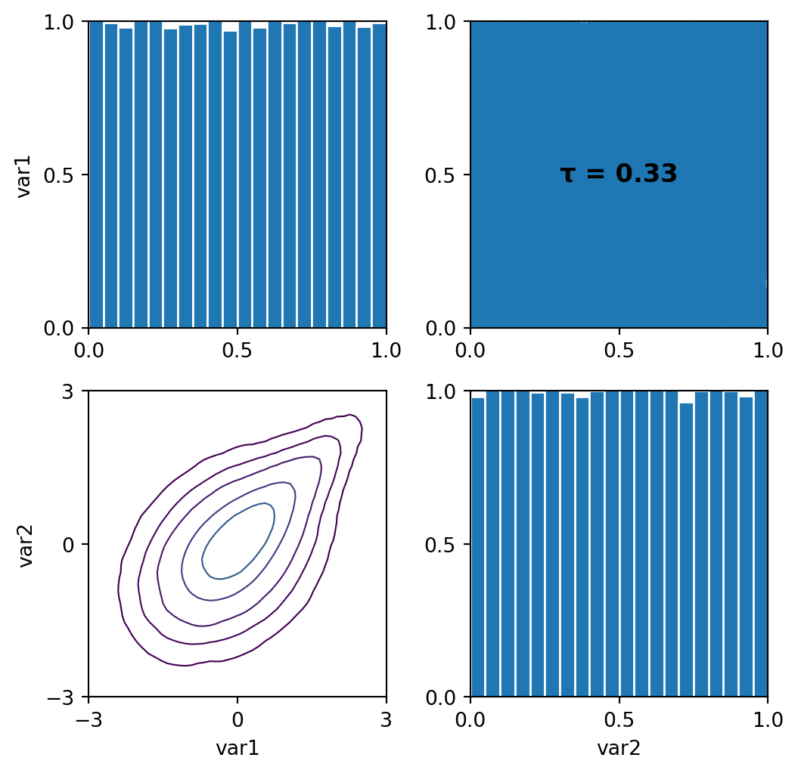
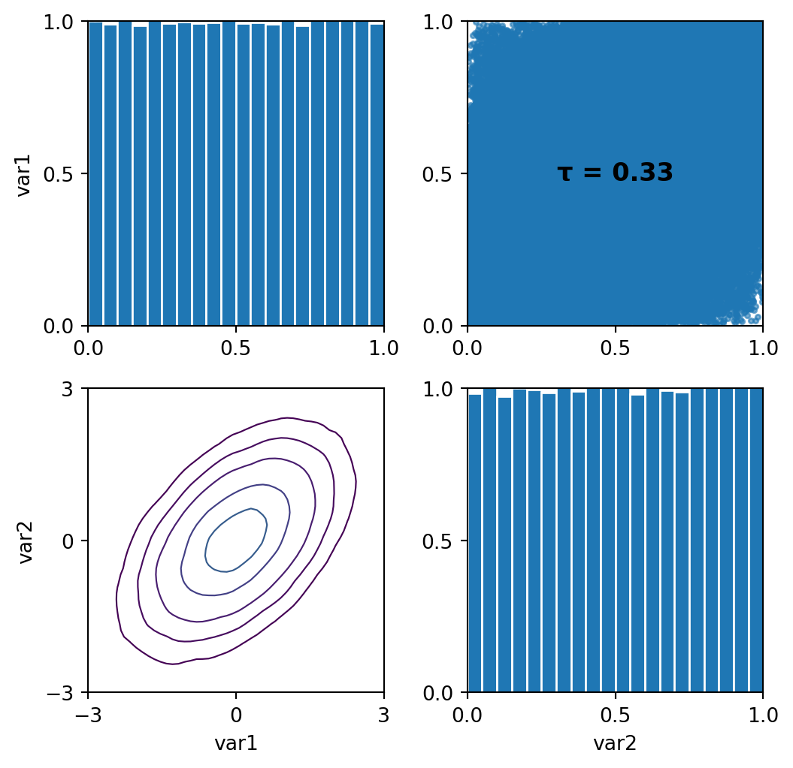
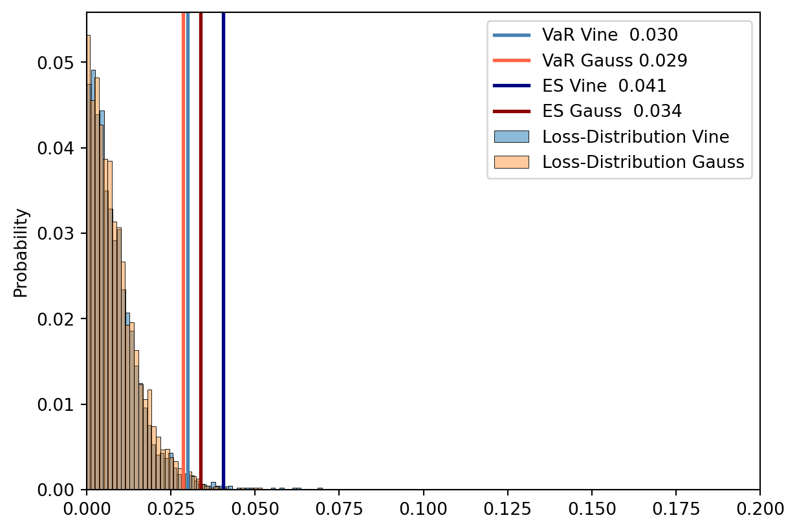
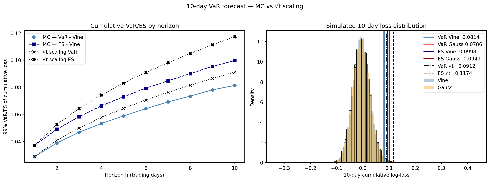
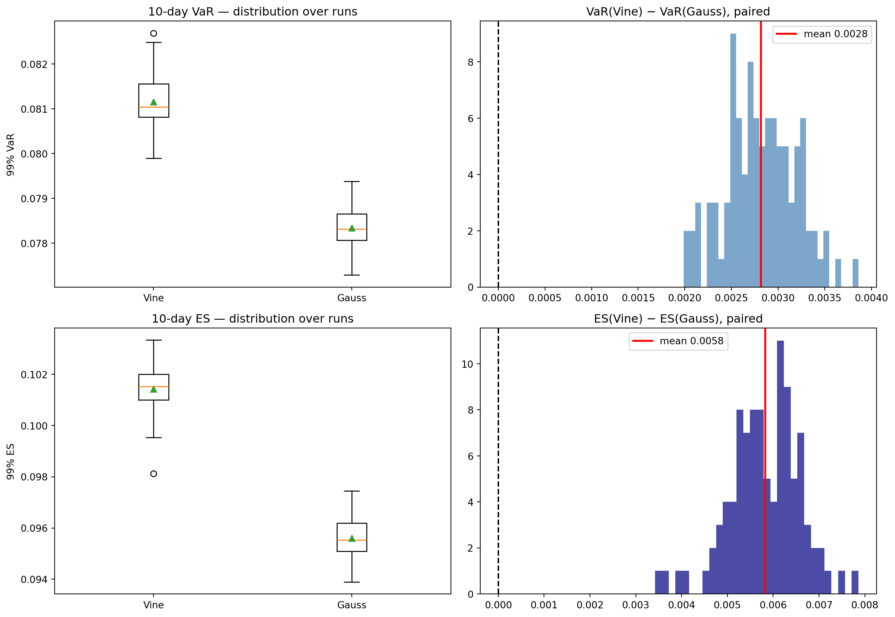
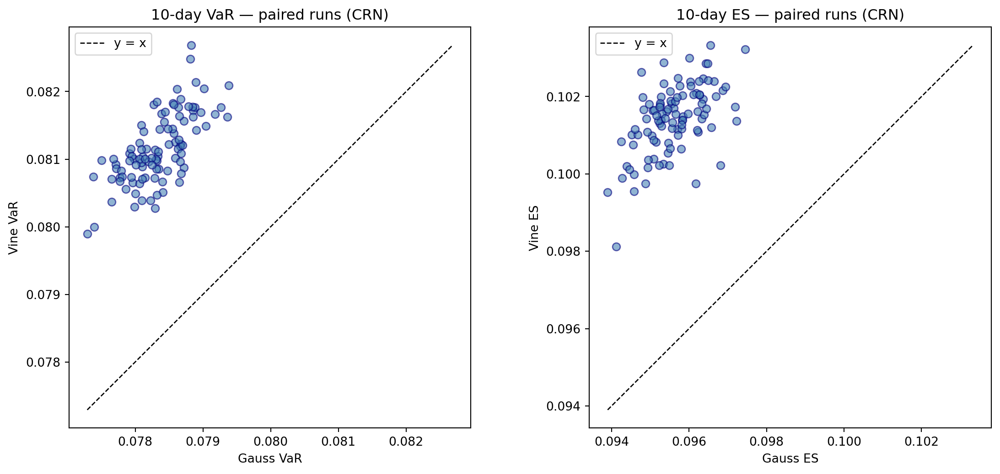

import pandas as pd
import numpy as np
from scipy.stats import rankdata, genpareto
from pyextremes import EVA
import matplotlib.pyplot as plt
import seaborn as sns
import pyvinecopulib as pv
import yfinance as yf
from arch import arch_model
from joblib import Parallel, delayedMultivariate Tail Risk — Mixed Equity-Commodity Portfolio — Vine vs. Gaussian Copula
Problem Statement
Rare and extreme losses are a fundamental challenge in risk analysis and portfolio management. This challenge is amplified in realistic multivariate settings: beyond the well-documented tendency of individual financial instruments to exhibit heavy tails and volatility clustering, the joint distribution of portfolio constituents introduces an additional layer of complexity. Understanding the dependence structure of the joint distribution — particularly in the tails — is crucial for accurately assessing portfolio tail risk.
This project addresses that challenge using a two-stage semiparametric approach. At the marginal level, GJR-GARCH filtering is applied to each asset to remove conditional heteroskedasticity, followed by GPD modelling of the standardised residuals to capture heavy-tailed behaviour. At the joint level, two copula specifications are compared: a vine copula, estimated automatically from the data, and a Gaussian copula as a benchmark. The central claim is that the Gaussian copula — by construction exhibiting asymptotic independence in the tails — systematically underestimates extreme portfolio losses relative to the vine copula, even when both models share the same GPD marginal structure. This underestimation is purely a consequence of the dependence model, not the marginals.
The analysis is conducted on a ten-dimensional portfolio of five US equities (NVDA, GOOGL, JPM, WMT, XOM) and five commodity futures (crude oil, silver, aluminium, gold, copper). Portfolio VaR and ES are estimated via Monte Carlo simulation for one- and ten-day horizons under both copula specifications.
Choosing Instruments
The focus of this project lies on the methodological problem of tail risk modelling in multivariate portfolios; instrument selection is therefore kept deliberately simple. All assets are denominated in USD, avoiding the additional complexity of currency exchange risk that would arise with international investments — a natural extension for follow-up work, alongside more complex instruments such as options.
The portfolio consists of five US equities (NVDA, GOOGL, JPM, WMT, XOM) and five commodity futures (crude oil, silver, aluminium, gold, copper). The selection is motivated by expected heterogeneity in tail dependence: equities are likely to exhibit strong co-movement in the tails due to shared market and sector-specific risks, whereas commodities — particularly gold — are expected to show weak or negative tail dependence with equities, reflecting their historical role as safe-haven assets during market stress.
ticker = [
"NVDA",
"GOOGL",
"JPM",
"WMT",
"XOM",
"CL=F",
"SI=F",
"ALI=F",
"GC=F",
"HG=F",
]prices = yf.download(ticker, start="2014-05-06", progress=False)
close = prices["Close"]
# WTI crude (CL=F) settled at negative prices in April 2020, and the panel
# contains a few gaps; both make the price ratio non-positive, which numpy flags
# when taking logs. The subsequent dropna() removes those rows, so the result is
# unaffected — the errstate guard only suppresses the (expected) warning.
with np.errstate(invalid="ignore"):
log_returns = np.log(close / close.shift(1)).dropna()
n_years = (log_returns.index[-1] - log_returns.index[0]).days / 365.25
n_obs = len(log_returns)Log-returns, defined as \(r_t = \log(P_t / P_{t-1})\), are used throughout in preference to simple returns for their additivity over time. Data is downloaded from Yahoo Finance via yfinance. The sample start was initially set to 2010-01-01 to maximise the available window; however, aluminium futures (ALI=F) are only available from 2014-05-06, so the start date was adjusted accordingly to ensure a balanced panel. This yields approximately 12 years of daily data with 2,992 observations per asset.
GJR-GARCH
To address the problem of volatility clustering in financial time series — and to meet the i.i.d. requirements of the subsequent POT analysis — a GJR-GARCH(1,1,1) model is applied to each asset. GJR-GARCH extends the standard GARCH model by allowing negative shocks to increase future volatility by more than positive shocks of equal magnitude. This asymmetry is known as the leverage effect: when asset prices fall, the debt-to-equity ratio of firms increases, raising financial risk and hence volatility. In addition, investors may react more strongly to losses than to gains of the same size.
The GJR-GARCH (\(p=1\), \(o=1\), \(q=1\)) model is specified as \[ X_t = \sigma_t \epsilon_t, \]
where the conditional variance evolves according to \[ \sigma^2_t = \alpha_0 + \alpha_1 \epsilon^2_{t-1} + \gamma_1 \epsilon^2_{t-1} \mathbf{1}[\epsilon_{t-1} < 0] + \beta_1 \sigma^2_{t-1}. \]
When the shock at \(t-1\) is negative, the indicator \(\mathbf{1}[\epsilon_{t-1} < 0]\) equals one and the effective ARCH coefficient becomes \(\alpha_1 + \gamma_1 > \alpha_1\), producing a larger increase in conditional variance than a positive shock of the same size.
def garch(ticker, log_returns, p, q, o):
mu = {}
std_resid = {}
conditional_volatility = {}
garch_result = {}
for t in ticker:
gam = arch_model(log_returns[t]*100, vol='GARCH', p=p, q=q, o=o)
garch_result[t]= gam.fit(disp='off')
mu[t] = -((garch_result[t].params['mu'])/100)
std_resid[t] = -(garch_result[t].resid / garch_result[t].conditional_volatility)
conditional_volatility[t] = garch_result[t].conditional_volatility / 100
return garch_result, std_resid, conditional_volatility, mu
garch_result, std_resid, conditional_volatility, mu_ts = garch(ticker , log_returns, 1, 1, 1)
print(pd.DataFrame(std_resid).std())NVDA 0.999995
GOOGL 0.999964
JPM 1.000044
WMT 1.000033
XOM 0.999900
CL=F 0.999969
SI=F 1.000030
ALI=F 1.000188
GC=F 1.000376
HG=F 0.999500
dtype: float64The model is fitted to each of the ten assets separately. For numerical stability, log-returns are multiplied by 100 prior to estimation; the conditional volatility is rescaled back afterwards. The full fit object, the conditional volatility, and the standardised residuals are retained for subsequent analysis.
An important sign convention applies. The GJR-GARCH leverage term is triggered by \(\mathbf{1}[\epsilon_{t-1} < 0]\), i.e. by negative residuals. If the model were fitted directly on log-losses (positive = loss), negative residuals would correspond to gains, so the leverage effect would incorrectly amplify volatility after gains rather than losses. For this reason, the model is fitted on log-returns, where negative residuals correctly identify losses. After fitting, the standardised residuals are negated to convert to the loss scale required for POT analysis — so that large positive values correspond to large losses. A short sanity check confirms that the standard deviation of the negated residuals is close to 1 for all assets, as expected under correct standardisation.
POT Analysis
A GPD model is fitted separately to the standardised residuals of each asset via the Peaks-over-Threshold method. The central modelling choice is the threshold \(u\): exceedances above \(u\) are theoretically justified to follow a GPD distribution by the Pickands–Balkema–de Haan theorem, but \(u\) must balance two competing demands. A high threshold reduces the bias of the GPD approximation but leaves few exceedances for estimation; a low threshold yields more data but risks fitting the GPD to observations where the approximation does not yet hold — the familiar bias–variance trade-off in extreme value analysis.
As a pragmatic solution, the 95th percentile of each asset’s residual distribution is used as a common threshold. This ensures a sufficient number of exceedances for stable MLE estimation while sitting far enough into the tail for the GPD approximation to plausibly hold. A limitation of this uniform choice is that the threshold may be too conservative for some assets — yielding fewer exceedances than necessary — or not conservative enough for others, in which case the GPD approximation may not yet be valid and parameter estimates may be biased. Parameter estimation is carried out via MLE using the pyextremes package.
alpha = 0.95
def GPD_fit(ticker, std_resid, alpha):
u = {}
model = {}
for t in ticker:
u[t] = np.quantile(std_resid[t], alpha)
model[t] = EVA(data=std_resid[t])
model[t].get_extremes(method="POT", threshold=u[t])
model[t].fit_model(distribution="genpareto", model="MLE")
return u, model
u, model = GPD_fit(ticker, std_resid, alpha)assets = [
"NVDA",
"GOOGL",
"JPM",
"WMT",
"XOM",
]
commodities = [
"CL=F",
"SI=F",
"ALI=F",
"GC=F",
"HG=F",
]
fig, axes = plt.subplots(2, 3, figsize=(15, 10))
for ax, t in zip(axes.flatten(), assets):
model[t].plot_probability("QQ", ax=ax)
axes.flatten()[-1].set_visible(False)
ax.set_title(t)
plt.show()
fig, axes = plt.subplots(2, 3, figsize=(15, 10))
for ax, c in zip(axes.flatten(), commodities):
model[c].plot_probability("QQ", ax=ax)
axes.flatten()[-1].set_visible(False)
ax.set_title(c)
plt.show()

The QQ-plots indicate a reasonable overall fit across most assets, with minor upper-tail deviations that are typical for GPD models: the most extreme observations tend to exceed the fitted distribution, as the GPD is anchored to the bulk of exceedances rather than the very deepest tail.
A notable exception is aluminium (ALI=F), where the fit is markedly poor (\(R^2 = 0.763\)). A single observation with a standardised residual of approximately 21 lies far above its theoretical GPD quantile of around 5. This is likely attributable to the extreme price spike in aluminium futures following the Russian invasion of Ukraine in February 2022 and the subsequent sanctions against Russian aluminium producers — a singular, politically driven event that falls outside the scope of any stationary tail model. As a consequence, tail risk for aluminium will be systematically underestimated for events of that severity, which constitutes a meaningful limitation of the downstream VaR and ES estimates.
Creating Pseudo Observations
Before fitting copula models, the standardised residuals of each asset must be transformed to uniform margins on \((0, 1)\) — a requirement for Sklar’s theorem to hold. This is achieved via the probability integral transform (PIT): if \(X\) has a continuous distribution function \(F\), then \(F(X) \sim U(0,1)\), since \(P(F^{\leftarrow}(U) \leq x) = P(U \leq F(x)) = F(x)\).
A semiparametric PIT is used rather than a purely empirical one. The empirical CDF is bounded above by \(n/(n+1)\), making it unable to assign probabilities to observations beyond the largest observed value. The GPD-based tail removes this limitation by extrapolating smoothly towards 1 for extreme observations.
Concretely, a distinction is made between the body and the tail of each marginal distribution. For observations below the threshold \(u_t\), the empirical CDF is used: ranks are computed and divided by \(n+1\), so that body values lie in \((0, (n - n_u)/(n+1)]\). For tail observations (\(z > u_t\)), the semiparametric CDF is given by \[ \hat{F}(z) = 1 - \frac{n_u}{n} \left(1 + \hat{\xi}\,\frac{z - u_t}{\hat{\sigma}}\right)^{-1/\hat{\xi}}, \]
where \(n_u/n\) is the empirical probability of exceeding \(u_t\). At the threshold, the tail starts at \(1 - n_u/n = (n-n_u)/n\), which is approximately continuous with the body endpoint \((n-n_u)/(n+1)\) for large \(n\).
def pit(ticker, model, std_resid, u):
F = {}
for t in ticker:
u_t = u[t]
n_u = len(model[t].extremes)
n = len(std_resid[t])
f_bar_u = n_u / n
z_full = std_resid[t].dropna().to_numpy()
z_tail = z_full[z_full > u_t]
F_body = rankdata(z_full)[z_full <= u_t] / (n + 1)
xi = model[t].distribution.mle_parameters["c"]
sigma = model[t].distribution.mle_parameters["scale"]
F_tail = 1 - f_bar_u * (1 + xi * ((z_tail - u_t) / sigma)) ** (-1 / xi)
F_full = np.zeros(n)
F_full[z_full <= u_t] = F_body
F_full[z_full > u_t] = F_tail
F[t] = F_full
return F
F_ticker = pit(ticker, model, std_resid, u)
pd.DataFrame(F_ticker).describe()| NVDA | GOOGL | JPM | WMT | XOM | CL=F | SI=F | ALI=F | GC=F | HG=F | |
|---|---|---|---|---|---|---|---|---|---|---|
| count | 2992.000000 | 2992.000000 | 2992.000000 | 2992.000000 | 2992.000000 | 2992.000000 | 2992.000000 | 2992.000000 | 2992.000000 | 2992.000000 |
| mean | 0.500035 | 0.500016 | 0.500065 | 0.500051 | 0.500058 | 0.500030 | 0.500037 | 0.500100 | 0.500045 | 0.500099 |
| std | 0.288684 | 0.288652 | 0.288730 | 0.288708 | 0.288721 | 0.288677 | 0.288686 | 0.288788 | 0.288699 | 0.288787 |
| min | 0.000334 | 0.000334 | 0.000334 | 0.000334 | 0.000334 | 0.000334 | 0.000334 | 0.000334 | 0.000334 | 0.000334 |
| 25% | 0.250167 | 0.250167 | 0.250167 | 0.250167 | 0.250167 | 0.250167 | 0.250167 | 0.250167 | 0.250167 | 0.250167 |
| 50% | 0.500000 | 0.500000 | 0.500000 | 0.500000 | 0.500000 | 0.500000 | 0.500000 | 0.500000 | 0.500000 | 0.500000 |
| 75% | 0.749833 | 0.749833 | 0.749833 | 0.749833 | 0.749833 | 0.749833 | 0.749833 | 0.749833 | 0.749833 | 0.749833 |
| max | 0.999912 | 0.999767 | 0.999758 | 0.999640 | 0.999745 | 0.999628 | 0.999744 | 0.999993 | 0.999836 | 0.999960 |
Fitting Copulas Models
Two copula specifications are fitted to the pseudo-observations. The first is an automatically selected vine copula; the second is a Gaussian copula serving as benchmark. Both are estimated using pyvinecopulib.
The vine copula is constructed via the algorithm of Dissmann et al. (2013), which sequentially selects pair-copulas in a tree structure, conditioning each pair on the variables already accounted for by higher-level trees. Crucially, each pair can be assigned a different copula family — for instance a Student-\(t\) copula for two equity indices with strong joint tail behaviour, and an independence copula for an equity-gold pair. This flexibility is the key advantage over the Gaussian copula, which imposes the same dependence structure on all pairs and, by construction of the Gaussian copula density, exhibits asymptotic independence: \(\lambda_U = 0\) for every pair regardless of the correlation parameter. This property holds even when non-Gaussian marginals such as GPD are used, since asymptotic independence is a feature of the copula itself, not the marginals.
The Gaussian copula is parametrised solely by the correlation matrix \(P\). It is estimated via Kendall’s \(\tau\), exploiting the analytical relationship \[ \rho = \sin\!\left(\frac{\pi}{2}\,\tau\right), \]
which allows a rank-based, robust estimate of \(P\) without requiring full MLE.
# Automated selection
mat = np.array(list(F_ticker.values())).T
vine_cop = pv.Vinecop(d=10)
vine_cop.select(data=mat)
controls = pv.FitControlsVinecop(family_set=[pv.BicopFamily.gaussian])
gauss_cop = pv.Vinecop.from_data(mat, controls=controls)To illustrate the difference between the two specifications, the fitted pair-copula for NVDA and GOOGL is shown for both models. The upper-right panel displays simulated pseudo-observations on the uniform scale; the lower-left panel shows copula density contours in normal scores.
For the vine copula, the pseudo-observation scatter shows clear clustering in the upper right corner — both assets experiencing large losses simultaneously — and the density contours are visibly elongated toward that corner. This indicates positive upper tail dependence (\(\lambda_U > 0\)): extreme losses in NVDA and GOOGL tend to co-occur more often than independence would predict.
The Gaussian copula, fitted with the same Kendall’s \(\tau = 0.34\), produces symmetric elliptical contours with no concentration in the corners. This reflects its structural property of asymptotic independence (\(\lambda_U = 0\)): conditional on one asset experiencing an extreme loss, the probability that the other does too converges to zero as the threshold increases. The two models capture the same average dependence but disagree fundamentally about joint tail behaviour — which is precisely what matters for portfolio tail risk.
pair_cop = vine_cop.get_pair_copula(tree=0, edge=0)
sim = pv.Bicop.simulate(pair_cop, n = 100000)
pv.pairs_copula_data(sim)
pair_cop = gauss_cop.get_pair_copula(tree=0, edge = 0)
sim = pv.Bicop.simulate(pair_cop, n = 100000)
pv.pairs_copula_data(sim)(<Figure size 537.6x537.6 with 4 Axes>,
array([[<Axes: ylabel='var1'>, <Axes: >],
[<Axes: xlabel='var1', ylabel='var2'>, <Axes: xlabel='var2'>]],
dtype=object))

Simulate from Copulas
Having fitted both copula models, samples of pseudo-observations on \((0,1)^{10}\) are drawn from each. These are then converted back to the original residual scale via the inverse semiparametric PIT, recovering simulated standardised residuals with the joint dependence structure implied by the respective copula.
The inversion requires care in the tail. For a simulated value \(U \leq \hat{F}(u)\), the empirical quantile function is applied directly. For \(U > \hat{F}(u)\), one cannot simply call genpareto.ppf(U): since \(U \in (\hat{F}(u), 1) \approx (0.95, 1)\), the GPD quantile function would only return large excesses, never producing values close to the threshold — small tail exceedances would be impossible. Instead, \(U\) is rescaled to a conditional uniform on \((0,1)\): \[
v = \frac{U - \hat{F}(u)}{1 - \hat{F}(u)},
\]
which is the conditional probability of being at most as extreme as \(U\), given that the threshold has already been exceeded. The inverse then follows as \[ z = u + \frac{\hat{\sigma}}{\hat{\xi}}\left[(1-v)^{-\hat{\xi}} - 1\right] = u + \texttt{genpareto.ppf}(v,\, \hat{\xi},\, \hat{\sigma}). \]
At \(U = \hat{F}(u)\) exactly, \(v = 0\) and \(\texttt{genpareto.ppf}(0) = 0\), so \(z = u\) — the inverse PIT is continuous at the threshold.
sim = pv.Vinecop.simulate(vine_cop, n=10000)
sim_gauss = pv.Vinecop.simulate(gauss_cop, n=10000)
def inv_pit(ticker, std_resid, model, sim, alpha):
F_inv = {}
for i, t in enumerate(ticker):
u_full = sim[:, i]
n_sim = len(u_full)
u_t = np.quantile(std_resid[t], alpha)
n_u = len(model[t].extremes)
n_obs = len(std_resid[t])
F_hat_u = 1 - n_u / n_obs
xi = model[t].distribution.mle_parameters["c"]
sigma = model[t].distribution.mle_parameters["scale"]
body_mask = u_full <= F_hat_u
tail_mask = ~body_mask
F_inv_full = np.empty(n_sim)
# body: empirical quantile function
F_inv_full[body_mask] = np.quantile(std_resid[t], u_full[body_mask])
# tail: rescale U to conditional uniform, GPD ppf, then shift by threshold
v_tail = (u_full[tail_mask] - F_hat_u) / (1 - F_hat_u)
F_inv_full[tail_mask] = u_t + genpareto.ppf(v_tail, c=xi, scale=sigma)
F_inv[t] = F_inv_full
return F_inv
F_inv = inv_pit(ticker, std_resid, model, sim, alpha)
sim_resid = pd.DataFrame(F_inv)
F_inv_gauss = inv_pit(ticker, std_resid, model, sim_gauss, alpha)
sim_resid_gauss = pd.DataFrame(F_inv_gauss)The simulated standardised residuals are converted back to the log-loss scale by applying the GARCH location-scale relationship: \[ \tilde{L}_{T+1} = \hat{\mu} + \hat{\sigma}_T \cdot Z, \] where \(\hat{\sigma}_T\) is the last observed conditional volatility — the natural one-step-ahead forecast under GARCH — and \(Z\) is the simulated standardised residual from the inverse PIT. The mean term \(\hat{\mu}\) is included for completeness; in practice it is negligible relative to \(\hat{\sigma}_T\) at the tail quantiles of interest, but omitting it entirely would be incorrect.
def rescale(ticker, sim_resid, conditional_volatility, mu):
sim_losses = pd.DataFrame(index=range(len(sim_resid)), columns=ticker)
for t in sim_resid:
sim_losses[t] = mu[t] + sim_resid[t] * conditional_volatility[t].iloc[-1]
return sim_losses
sim_log_losses = rescale(ticker, sim_resid, conditional_volatility, mu_ts)
sim_log_losses_gauss = rescale(ticker, sim_resid_gauss, conditional_volatility, mu_ts)Loss Aggregation and Risk Measures
Individual asset losses are aggregated into a single portfolio loss by taking an equally weighted average across all ten assets, \[ L_P = \frac{1}{n}\sum_{i=1}^{n} L_i. \] Equal weighting is a deliberate simplification: the focus of this project is the effect of the dependence model on portfolio tail risk, not portfolio optimisation. With alternative weights, the quantitative results would shift, but the qualitative finding — that the vine copula produces larger tail risk estimates than the Gaussian copula — is expected to be robust. The simulated loss distributions and corresponding risk measures for both copula specifications are shown below.
1-day Risk Measures
Loss_Portfolio = pd.DataFrame.sum(sim_log_losses, axis=1) / sim_log_losses.shape[1]
Loss_Portfolio_gauss = (
pd.DataFrame.sum(sim_log_losses_gauss, axis=1) / sim_log_losses_gauss.shape[1]
)
VaR_vine_1d = np.quantile(Loss_Portfolio, 0.99)
ES_vine_1d = Loss_Portfolio[Loss_Portfolio > VaR_vine_1d].mean()
print(f"Next-day Vine VaR_{0.99}: {VaR_vine_1d:.3f}")
print(f"Next-day Vine ES_{0.99}: {ES_vine_1d:.3f}")
VaR_gauss_1d = np.quantile(Loss_Portfolio_gauss, 0.99)
ES_gauss_1d = Loss_Portfolio_gauss[Loss_Portfolio_gauss > VaR_gauss_1d].mean()
print(f"Next-day Gauss VaR_{0.99}: {VaR_gauss_1d:.3f}")
print(f"Next-day Gauss ES_{0.99}: {ES_gauss_1d:.3f}")
sns.histplot(
Loss_Portfolio, label="Loss-Distribution Vine", alpha=0.5, stat="probability"
)
sns.histplot(
Loss_Portfolio_gauss, label="Loss-Distribution Gauss", alpha=0.4, stat="probability"
)
plt.xlim(0.00, 0.20)
plt.axvline(VaR_vine_1d, color="steelblue", lw=2, label=f"VaR Vine {VaR_vine_1d:.3f}")
plt.axvline(VaR_gauss_1d, color="tomato", lw=2, label=f"VaR Gauss {VaR_gauss_1d:.3f}")
plt.axvline(ES_vine_1d, color="navy", lw=2, label=f"ES Vine {ES_vine_1d:.3f}")
plt.axvline(ES_gauss_1d, color="darkred", lw=2, label=f"ES Gauss {ES_gauss_1d:.3f}")
plt.legend()
plt.show()Next-day Vine VaR_0.99: 0.030
Next-day Vine ES_0.99: 0.041
Next-day Gauss VaR_0.99: 0.029
Next-day Gauss ES_0.99: 0.034
10-day Risk measures
To produce 10-day VaR and ES estimates for both copula specifications, a two-stage Monte Carlo procedure is applied. In the first stage, portfolio losses are simulated via GARCH forward recursion: for each horizon step \(h = 1,\ldots,10\), the conditional variance is updated using the GJR-GARCH equation and new standardised residuals are drawn from the fitted copula via inverse PIT. This is repeated \(R = 100\) times per copula model.
To isolate model differences from Monte Carlo noise, Common Random Numbers (CRN) are used: in each replication round \(r\), both the vine and the Gaussian copula are seeded with the same value \(\texttt{base\_seed} + r\). As a result, any difference in risk measure estimates between the two models reflects the copula structure alone, not sampling variability.
An important subtlety arises in the ES calculation. ES is not additive over time: summing daily ES estimates across ten horizons implicitly assumes that the worst days always coincide across periods, which overstates the true risk. The correct approach is to first cumulate losses along each simulated path and then compute VaR and ES over the resulting 10-day loss distribution.
def forecast(
ticker,
garch_result,
std_resid,
copula,
model,
threshold,
horizon=10,
n_sims=100000,
seed=42,
):
portfolio_forecast = pd.DataFrame()
sigma2_t = {}
e = {}
for t in ticker:
sigma2_t[t] = (garch_result[t].conditional_volatility.iloc[-1] / 100) ** 2
e[t] = -(float(garch_result[t].resid.iloc[-1]) / 100)
for h in range(horizon):
u_sim = pv.Vinecop.simulate(copula, n=n_sims, seeds=[seed, h])
F_inv = pd.DataFrame(inv_pit(ticker, std_resid, model, u_sim, threshold))
sim_log_losses = pd.DataFrame()
for t in ticker:
p = garch_result[t].params
mu, omega = -p["mu"] / 100, p["omega"] / 100**2
a1, b1, g1 = p["alpha[1]"], p["beta[1]"], p["gamma[1]"]
gamma_eff = np.where(e[t] >= 0, g1, 0.0)
sigma2_t[t] = omega + (a1 + gamma_eff) * e[t] ** 2 + b1 * sigma2_t[t]
e[t] = np.sqrt(sigma2_t[t]) * F_inv[t]
sim_log_losses[t] = mu + np.sqrt(sigma2_t[t]) * F_inv[t]
portfolio_forecast[h] = sim_log_losses.sum(axis=1) / sim_log_losses.shape[1]
simulated_portfolio = portfolio_forecast.sum(axis=1)
return simulated_portfolio, portfolio_forecast
sim_port_vine, daily_vine = forecast(
ticker, garch_result, std_resid, vine_cop, model, 0.95
)
sim_port_gauss, daily_gauss = forecast(
ticker, garch_result, std_resid, gauss_cop, model, 0.95
)
def risk_by_horizon(daily, q=0.99):
"""
Cumulative VaR and ES at level q for each horizon.
Args:
daily: (n_sims, horizon) array or DataFrame of per-day portfolio losses
q: confidence level
Returns:
var, es — each a (horizon,) array of cumulative risk measures
"""
cum = np.cumsum(np.asarray(daily), axis=1) # (n_sims, horizon)
var = np.quantile(cum, q, axis=0) # (horizon,)
tail = np.where(cum > var, cum, np.nan) # non-exceedances -> nan
es = np.nanmean(tail, axis=0) # (horizon,)
return var, es
var_vine, es_vine = risk_by_horizon(daily_vine)
var_gauss, es_gauss = risk_by_horizon(daily_gauss)
def _one_run(
r, ticker, garch_result, std_resid, copula, model, threshold, n_sims, base_seed
):
sim_port, daily = forecast(
ticker,
garch_result,
std_resid,
copula,
model,
threshold,
n_sims=n_sims,
seed=base_seed + r,
)
var, es = risk_by_horizon(daily)
return var[-1], es[-1]
def repeat_forecast(
ticker,
garch_result,
std_resid,
copula,
model,
threshold,
R=100,
base_seed=42,
n_sims=100000,
n_jobs=12,
):
results = Parallel(n_jobs=n_jobs)(
delayed(_one_run)(
r,
ticker,
garch_result,
std_resid,
copula,
model,
threshold,
n_sims,
base_seed,
)
for r in range(R)
)
var_runs, es_runs = zip(*results)
return np.array(var_runs), np.array(es_runs)
MC_var_vine, MC_es_vine = repeat_forecast(
ticker=ticker,
garch_result=garch_result,
std_resid=std_resid,
copula=vine_cop,
model=model,
threshold=0.95,
)
MC_var_gauss, MC_es_gauss = repeat_forecast(
ticker=ticker,
garch_result=garch_result,
std_resid=std_resid,
copula=gauss_cop,
model=model,
threshold=0.95,
)10-day result - one path
The simulated loss distributions and cumulative risk measures are shown for both copula specifications. To motivate the GARCH-based forward simulation, the vine copula risk measures are compared against a naïve square-root-of-time benchmark, which scales the one-day VaR and ES by \(\sqrt{h}\). The \(\sqrt{t}\) rule implicitly assumes constant, i.i.d. volatility. Under GARCH, however, conditional volatility is mean-reverting: when current volatility is elevated, the model expects it to decline, so cumulative risk grows more slowly than \(\sqrt{h}\) implies. This is visible in the left panel — both naïve estimates lie systematically above their MC counterparts across all horizons.
The right panel compares the simulated 10-day loss distributions for vine and Gaussian copulas. As expected, the vine model produces larger tail risk estimates: the 10-day 99% VaR is 0.0837 for vine versus 0.0810 for Gauss, and the ES is 0.1044 versus 0.0984. This plot represents a single simulation run; whether this difference reflects genuine model structure or Monte Carlo noise is examined in the next section.
# 1-day anchor for the naive scaling rule
var_1d_vine = var_vine[0]
var_path_scaled_vine = var_1d_vine * np.sqrt(np.arange(1, 11))
var_cum_scaled_vine = var_1d_vine * np.sqrt(10)
es_1d_vine = es_vine[0]
es_path_scaled_vine = es_1d_vine * np.sqrt(np.arange(1, 11))
es_cum_scaled_vine = es_1d_vine * np.sqrt(10)
h_axis = np.arange(1, 11)
fig, axes = plt.subplots(1, 2, figsize=(14, 5))
# (a) Cumulative VaR by horizon
ax = axes[0]
ax.plot(h_axis, var_vine, "o-", color="steelblue", label="MC — VaR - Vine")
ax.plot(h_axis, es_vine, "s--", color="navy", label="MC — ES - Vine")
ax.plot(h_axis, var_path_scaled_vine, "x:", color="black", label="√t scaling VaR")
ax.plot(h_axis, es_path_scaled_vine, "X:", color="black", label="√t scaling ES")
ax.set_xlabel("Horizon h (trading days)")
ax.set_ylabel("99% VaR/ES of cumulative loss")
ax.set_title("Cumulative VaR/ES by horizon")
ax.legend()
# (b) 10-day cumulative loss distribution
ax = axes[1]
sns.histplot(
sim_port_vine.to_numpy(),
bins=80,
stat="density",
alpha=0.4,
color="steelblue",
label="Vine",
ax=ax,
)
sns.histplot(
sim_port_gauss.to_numpy(),
bins=80,
stat="density",
alpha=0.4,
color="orange",
label="Gauss",
ax=ax,
)
ax.axvline(var_vine[-1], color="steelblue", lw=2, label=f"VaR Vine {var_vine[-1]:.4f}")
ax.axvline(var_gauss[-1], color="tomato", lw=2, label=f"VaR Gauss {var_gauss[-1]:.4f}")
ax.axvline(es_vine[-1], color="navy", lw=2, label=f"ES Vine {es_vine[-1]:.4f}")
ax.axvline(es_gauss[-1], color="darkred", lw=2, label=f"ES Gauss {es_gauss[-1]:.4f}")
ax.axvline(
var_cum_scaled_vine,
color="black",
ls="-.",
lw=1.5,
label=f"VaR √t {var_cum_scaled_vine:.4f}",
)
ax.axvline(
es_cum_scaled_vine,
color="black",
ls="--",
lw=1.5,
label=f"ES √t {es_cum_scaled_vine:.4f}",
)
ax.set_xlabel("10-day cumulative log-loss")
ax.set_title("Simulated 10-day loss distribution")
ax.legend()
fig.suptitle("10-day VaR forecast — MC vs √t scaling", y=1.02)
plt.tight_layout()
plt.show()
10-day result - one hundred paths
To assess whether the difference between vine and Gaussian copula risk estimates reflects genuine model structure or Monte Carlo noise, both risk measures are computed across \(R = 100\) independent simulation runs. The results are unambiguous: the vine copula produces higher 10-day VaR and ES than the Gaussian copula in every single run, with mean paired differences of 0.0033 for VaR and 0.0066 for ES. The paired difference histograms lie entirely to the right of zero, confirming that the effect is not an artefact of sampling variability.
The ES gap is approximately twice the VaR gap. This is the central economic finding of the project. VaR is a quantile estimator — it captures whether a threshold is exceeded, but not by how much. ES averages over the magnitude of exceedances. Under the vine copula, tail-dependent assets tend to experience large losses simultaneously in the worst scenarios, driving up the size of joint exceedances. The Gaussian copula, with its asymptotic independence, cannot reproduce this co-movement in the extremes. The consequence is that the Gaussian model systematically underestimates the severity of tail events — and this underestimation is more pronounced for ES than for VaR precisely because ES is sensitive to what happens deep in the tail.
diff_var = MC_var_vine - MC_var_gauss # paired via CRN
diff_es = MC_es_vine - MC_es_gauss
fig, axes = plt.subplots(2, 2, figsize=(13, 9))
ax = axes[0, 0]
ax.boxplot([MC_var_vine, MC_var_gauss], showmeans=True)
ax.set_xticklabels(["Vine", "Gauss"]); ax.set_ylabel("99% VaR")
ax.set_title("10-day VaR — distribution over runs")
ax = axes[0, 1]
ax.hist(diff_var, bins=30, color="steelblue", alpha=0.7)
ax.axvline(0, color="black", lw=1.5, ls="--")
ax.axvline(diff_var.mean(), color="red", lw=2, label=f"mean {diff_var.mean():.4f}")
ax.set_title("VaR(Vine) − VaR(Gauss), paired"); ax.legend()
ax = axes[1, 0]
ax.boxplot([MC_es_vine, MC_es_gauss], showmeans=True)
ax.set_xticklabels(["Vine", "Gauss"]); ax.set_ylabel("99% ES")
ax.set_title("10-day ES — distribution over runs")
ax = axes[1, 1]
ax.hist(diff_es, bins=30, color="navy", alpha=0.7)
ax.axvline(0, color="black", lw=1.5, ls="--")
ax.axvline(diff_es.mean(), color="red", lw=2, label=f"mean {diff_es.mean():.4f}")
ax.set_title("ES(Vine) − ES(Gauss), paired"); ax.legend()
plt.tight_layout()
plt.show()
fig, axes = plt.subplots(1, 2, figsize=(12, 5.5))
for ax, vine, gauss, name in [
(axes[0], MC_var_vine, MC_var_gauss, "VaR"),
(axes[1], MC_es_vine, MC_es_gauss, "ES"),
]:
ax.scatter(gauss, vine, alpha=0.6, color="steelblue", edgecolor="navy", s=40)
# y=x diagonal across the joint range
lo = min(gauss.min(), vine.min())
hi = max(gauss.max(), vine.max())
ax.plot([lo, hi], [lo, hi], "k--", lw=1, label="y = x")
ax.set_xlabel(f"Gauss {name}")
ax.set_ylabel(f"Vine {name}")
ax.set_title(f"10-day {name} — paired runs (CRN)")
ax.legend()
ax.set_aspect("equal")
plt.tight_layout()
plt.show()

Conclusion
This project has shown that the choice of dependence model has a material impact on portfolio tail risk estimates. Assuming asymptotic independence in the tails — as the Gaussian copula does by construction — leads to systematic underestimation of both VaR and ES. Across \(R = 100\) independent simulation runs with Common Random Numbers, the vine copula produced higher 10-day 99% tail risk estimates than the Gaussian copula in every single run, with a mean paired difference of approximately 4% for VaR and 6% for ES.
The larger gap for ES is not coincidental. VaR captures whether a threshold is exceeded; ES averages over the magnitude of exceedances. Under positive upper tail dependence, assets are more likely to experience large losses simultaneously — driving up the size of joint exceedances beyond what the Gaussian copula can reproduce. ES is directly sensitive to this effect; VaR only partially so.
Several limitations should be noted. The portfolio is equally weighted and static — with optimised or dynamically adjusted weights, both the quantitative results and the relative advantage of the vine copula could differ. All assets are denominated in USD, deliberately excluding currency risk; extending the analysis to international investments would require modelling exchange rate dependence as well. Finally, the aluminium futures (ALI=F) showed a poor GPD fit due to a singular price spike in 2022, which means tail risk for that asset is likely underestimated.
Natural extensions include dynamic copula specifications that allow the dependence structure to evolve over time, more complex instruments such as financial derivatives, and a rolling-window backtest of portfolio-level VaR and ES to formally validate the joint model out of sample.